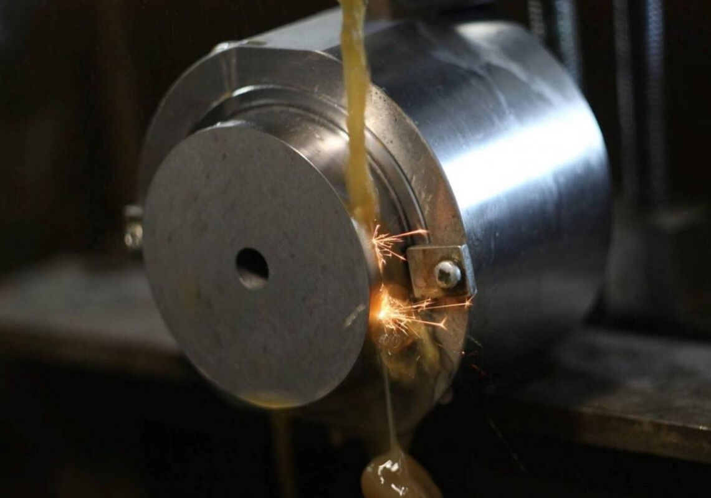
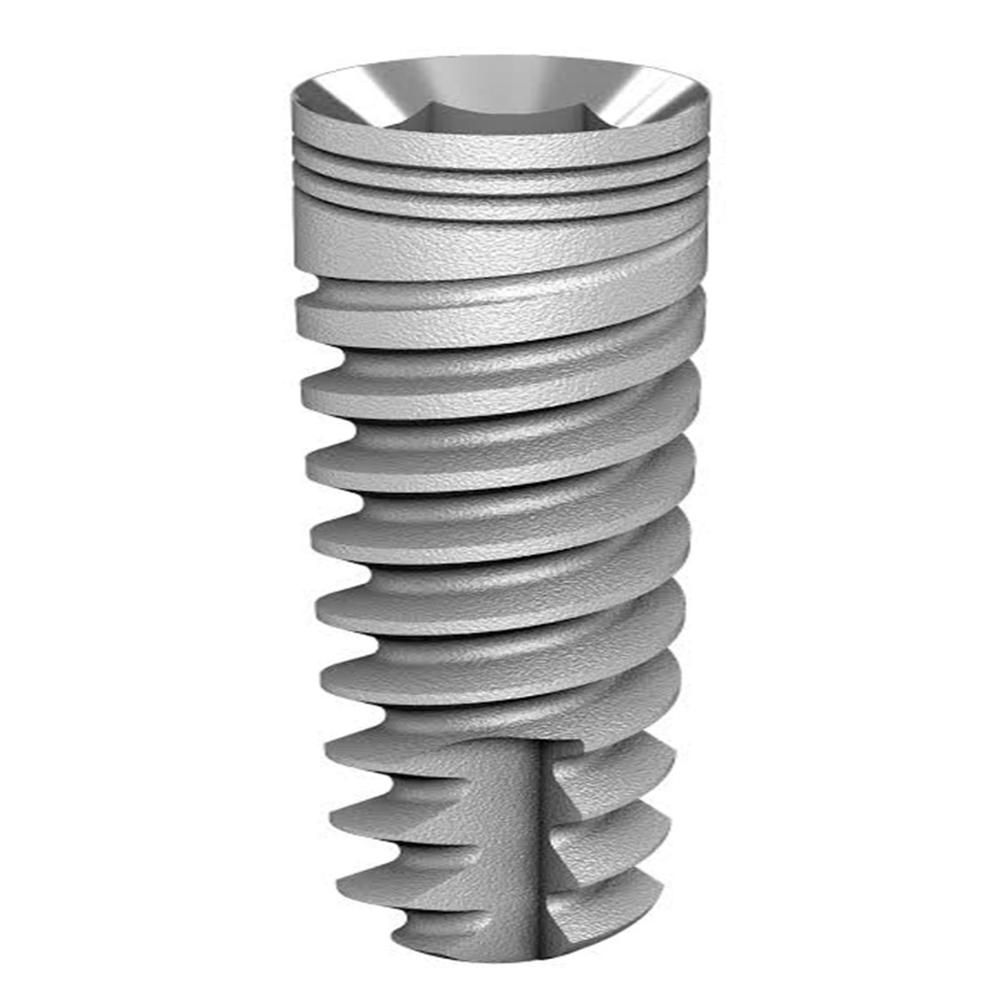

Короткий ответ: ЭЭО в медицине — не «замена механики», а инструмент для задач, где механика не может или невыгодна. Ниже — где она реально нужна, а где дешевле и быстрее на механике.
Вокруг ЭЭО в медицине много мифов в обе стороны: от «ЭЭО решит всё» до «это экзотика для пресс-форм». Разбираем честно: какие задачи в производстве медицинских изделий и инструментов реально решаются ЭЭО, а какие — дешевле и быстрее на механике. С примерами на титане, металле номер один в имплантологии.

Где ЭЭО — правильный инструмент
-
Прошивка внутренних профилей в мелких сериях и на нестандартные интерфейсы. Внутренние шестигранники, шлицевые и фигурные гнёзда под инструмент — типовая задача в имплантатах, абатментах и аналогах. На стандартных интерфейсах серийного выпуска механика (прошивка пуансоном на токарном центре, ротационная протяжка) делает это за секунды — и в серии ЭЭО там не конкурент. Но как только интерфейс нестандартный, геометрия сложная или серия мелкая — стоимость оснастки и переналадки механики растёт, а ЭЭО позволяет получить полость электродом, выточенным за час.
-
Извлечение сломанного инструмента. Закалённое сверло или метчик, обломившийся в детали из закалённой стали или твёрдого сплава, не берёт ни одно лезвие. ЭЭО выжигает локально — вокруг обломка, не задевая деталь. Это классическая ремонтная задача, где у электроэрозии нет альтернатив вообще.
-
Обработка закалённых и твёрдых материалов. Твёрдые сплавы, закалённая сталь выше 45 HRC, наплавленные слои — все они за пределами комфортной зоны лезвийного инструмента. Электроэрозия их режет без оглядки на твёрдость.
-
Глубокие и глухие полости со сложным профилем. Пазы, каналы, фигурные полости, куда не дотянется фреза нужного диаметра или где съём фрезерованием оставил бы борозды и заусенцы, требующие ручной доводки.

Где ЭЭО не нужна — честно
Серийное производство деталей с простыми геометриями — не территория ЭЭО. Пример из практики рынка: внутренний шестигранник «под ключ» в титановом имплантате в серийном производстве прошивается пуансоном на токарном автомате за 1–2 секунды — в 10–20 раз дешевле ЭЭО-прошивки той же полости.
Тот же принцип работает для шлицев, лысок, торцевых профилей: если геометрия стандартная, серия крупная, а материал позволяет лезвийную обработку — механика выигрывает всегда.
Это принципиально: ЭЭО — не «замена механики», а инструмент для задач, где механика не может или невыгодна. Грамотный подрядчик скажет об этом прямо — и сэкономит вам деньги на маршруте.
Особенности ЭЭО титана для медицинских изделий
Титан в ЭЭО требует внимания к трём вещам (подробно — в нашей предыдущей статье «Электроэрозионная обработка титана»):
- среда: для ответственных поверхностей — деионизированная или дистиллированная вода вместо углеводородных диэлектриков;
- электрод: для биоконтактирующих поверхностей — только титановый электрод, недопустим перенос меди и цинка с латуни;
- финиш: ультразвуковая очистка и 100% визуальный контроль — стандарт завершения операции.
Практический чек-лист: знать ли ЭЭО на вашу задачу
Ответьте на пять вопросов:
- Твёрдость материала выше 45 HRC или это титан / твёрдый сплав?
- Геометрия нестандартная или мелкосерийная?
- Полость глубокая, глухая или фигурная?
- Нужна нулевая сила резания (тонкие стенки, риск деформации)?
- Это ремонт обломанного инструмента в детали?
Если хотя бы на два — «да», ЭЭО стоит рассматривать всерьёз. Если на все пять — «нет», отправляйте на механообработку, там дешевле.
Разберём вашу задачу
Или позвоните: +7 (939) 440-40-01, sale@tochtex.ru
Частые вопросы
Когда ЭЭО оправдана в медицинских изделиях?
Прошивка нестандартных или мелкосерийных интерфейсов, извлечение сломанного инструмента из закалённых деталей, обработка закалённых сталей и твёрдых сплавов, глубокие и глухие полости сложного профиля, а также биоконтактирующие поверхности из титана.
Когда ЭЭО не нужна?
Серийное производство деталей с простыми геометриями. Внутренний шестигранник в титановом имплантате в серии прошивается пуансоном за 1–2 секунды — в 10–20 раз дешевле ЭЭО.
Какие особенности ЭЭО титана для медицинских изделий?
Три ключевых: среда (вода вместо углеводородов), электрод (титановый, не латунный), финиш (ультразвуковая очистка и 100% визуальный контроль).
Другие услуги
- Электроэрозионная обработка: проволочная вырезка и прошивка
- Токарные, фрезерные, шлифовальные работы
- Изготовление пресс-форм и штампов
Читайте также
- Электроэрозионная обработка титана: среда, электрод и подводные камни
- Поверхность дентального имплантата: SLA, лазер и ЭЭО — честное сравнение
- Электроэрозионная обработка металла: полный обзор
Нужна ЭЭО для медицинских изделий?
Прошивка внутренних профилей, извлечение сломанного инструмента, изготовление электродов-инструментов. Станки Sodick.